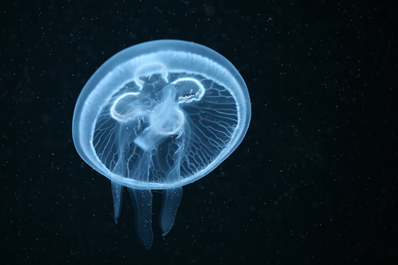

Moon Jelly (Aurelia aurita)
The Moon Jelly is one of the most common and recognizable jellyfish. They are found in most of the world's oceans and are known for their translucent, saucer-shaped bell, typically 25-40 cm in diameter. Their four horseshoe-shaped gonads are clearly visible through the top of the bell.
Sting: Their sting is very mild, often not felt by humans, or causing only minor irritation. They primarily feed on small plankton and mollusks, which they catch with their short, numerous tentacles.
Interesting Fact: Moon jellies have a complex life cycle, including both polyp and medusa stages, and can reproduce both sexually and asexually.
Lion's Mane Jellyfish (Cyanea capillata)

The Lion's Mane Jellyfish is the largest known species of jellyfish. Its bell can reach diameters of up to 2 meters (6 feet 7 inches), and its tentacles can trail as long as 36.5 meters (120 feet) or more, making it one of the longest known animals.
Habitat: They are typically found in cold, boreal waters of the Arctic, northern Atlantic, and northern Pacific Oceans. They are pelagic, meaning they live in the open sea.
Sting: The sting of a Lion's Mane Jellyfish can be quite painful, causing burning sensations, redness, and muscle cramps. Detached tentacles can remain venomous for some time.
Box Jellyfish (Cubozoa)
Box jellyfish are distinguished by their cube-shaped medusae. Some species of box jellyfish produce extremely potent venom: Chironex fleckeri, Carukia barnesi, and Malo kingi are among the most venomous creatures in the world. Stings from these and a few other species in the class are extremely painful and can be fatal to humans.
Eyes: Unlike most jellyfish, box jellyfish have complex eyes with lenses, corneas, and retinas, allowing them to see to some extent. They have 24 eyes in total, grouped in clusters on each side of their bell.
Habitat: They are predominantly found in tropical and subtropical coastal waters around the world.